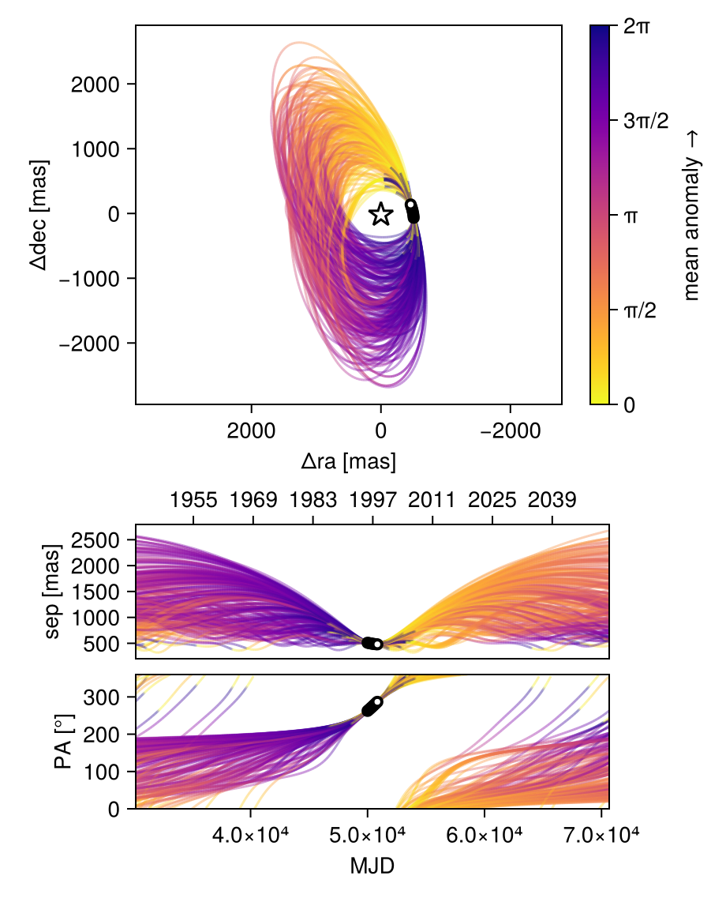
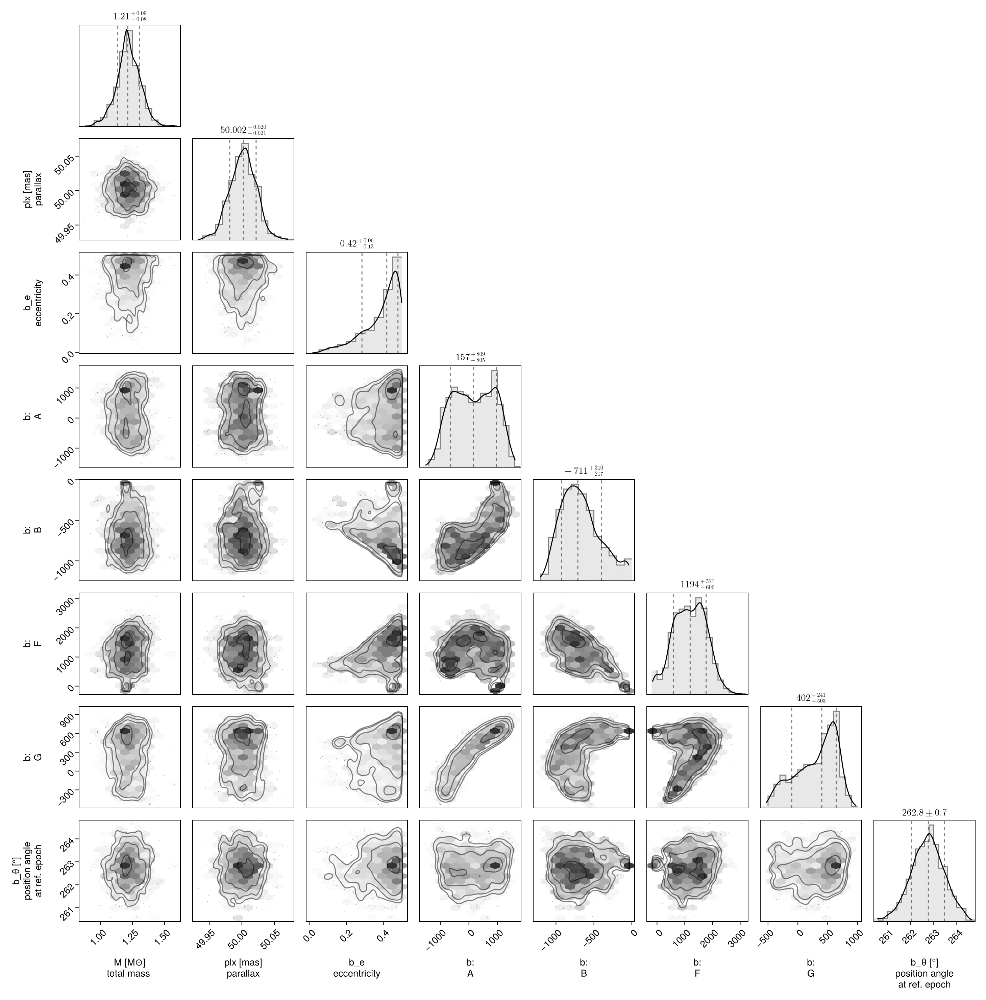

Fit with a Thiele-Innes Basis
This example shows how to fit relative astrometry using a Thiele-Innes orbital basis instead of the traditional Campbell basis used in other tutorials. The Thiele-Innes basis is more suitable then Campbell for fitting low-eccentricity orbits, because it does not have the issues where ω, Ω, and tp become degenerate as eccentricity and/or inclination fall to zero.
At the end, we will convert our results back into the Campbell basis to compare.
using Octofitter
using CairoMakie
using PairPlots
using Distributions
astrom_like = PlanetRelAstromLikelihood(
(epoch = 50000, ra = -505.7637580573554, dec = -66.92982418533026, σ_ra = 10, σ_dec = 10, cor=0),
(epoch = 50120, ra = -502.570356287689, dec = -37.47217527025044, σ_ra = 10, σ_dec = 10, cor=0),
(epoch = 50240, ra = -498.2089148883798, dec = -7.927548139010479, σ_ra = 10, σ_dec = 10, cor=0),
(epoch = 50360, ra = -492.67768482682357, dec = 21.63557115669823, σ_ra = 10, σ_dec = 10, cor=0),
(epoch = 50480, ra = -485.9770335870402, dec = 51.147204404903704, σ_ra = 10, σ_dec = 10, cor=0),
(epoch = 50600, ra = -478.1095526888573, dec = 80.53589069730698, σ_ra = 10, σ_dec = 10, cor=0),
(epoch = 50720, ra = -469.0801731788123, dec = 109.72870493064629, σ_ra = 10, σ_dec = 10, cor=0),
(epoch = 50840, ra = -458.89628893460525, dec = 138.65128697876773, σ_ra = 10, σ_dec = 10, cor=0),
)
@planet b ThieleInnesOrbit begin
e ~ Uniform(0.0, 0.5)
A ~ Normal(0, 10000) # milliarcseconds
B ~ Normal(0, 10000) # milliarcseconds
F ~ Normal(0, 10000) # milliarcseconds
G ~ Normal(0, 10000) # milliarcseconds
θ ~ UniformCircular()
tp = θ_at_epoch_to_tperi(system,b,50000.0) # reference epoch for θ. Choose an MJD date near your data.
end astrom_like
@system TutoriaPrime begin
M ~ truncated(Normal(1.2, 0.1), lower=0)
plx ~ truncated(Normal(50.0, 0.02), lower=0)
end b
model = Octofitter.LogDensityModel(TutoriaPrime)LogDensityModel for System TutoriaPrime of dimension 9 with fields .ℓπcallback and .∇ℓπcallback
We now sample from the model as usual:
using Random
Random.seed!(0)
results = octofit(model)Chains MCMC chain (1000×24×1 Array{Float64, 3}):
Iterations = 1:1:1000
Number of chains = 1
Samples per chain = 1000
Wall duration = 4.35 seconds
Compute duration = 4.35 seconds
parameters = M, plx, b_e, b_A, b_B, b_F, b_G, b_θy, b_θx, b_θ, b_tp
internals = n_steps, is_accept, acceptance_rate, hamiltonian_energy, hamiltonian_energy_error, max_hamiltonian_energy_error, tree_depth, numerical_error, step_size, nom_step_size, is_adapt, loglike, logpost, tree_depth, numerical_error
Summary Statistics
parameters mean std mcse ess_bulk ess_tail ⋯
Symbol Float64 Float64 Float64 Float64 Float64 Flo ⋯
M 1.2183 0.0931 0.0042 484.0294 337.4978 1. ⋯
plx 50.0017 0.0202 0.0007 878.8417 521.0876 0. ⋯
b_e 0.3877 0.1021 0.0052 353.9388 391.8210 1. ⋯
b_A 157.5875 709.6447 125.4662 35.1322 394.1444 1. ⋯
b_B -671.3603 257.4412 44.8047 43.0665 28.2628 1. ⋯
b_F 1182.5071 583.2842 71.8534 67.8065 35.4212 1. ⋯
b_G 308.3946 343.3486 51.8785 35.3775 209.8055 1. ⋯
b_θy -0.1275 0.0172 0.0006 747.5913 654.3178 1. ⋯
b_θx -1.0002 0.0994 0.0039 667.2774 511.5619 1. ⋯
b_θ -1.6977 0.0127 0.0005 643.6210 425.0584 0. ⋯
b_tp 15892.7442 32994.4514 2512.8620 216.1465 585.2850 1. ⋯
2 columns omitted
Quantiles
parameters 2.5% 25.0% 50.0% 75.0% 97.5 ⋯
Symbol Float64 Float64 Float64 Float64 Float6 ⋯
M 1.0280 1.1636 1.2127 1.2796 1.398 ⋯
plx 49.9627 49.9883 50.0023 50.0151 50.040 ⋯
b_e 0.1242 0.3337 0.4186 0.4656 0.497 ⋯
b_A -1032.8015 -457.7115 157.0750 779.9485 1338.311 ⋯
b_B -1069.0533 -865.5326 -711.2323 -522.2641 -72.616 ⋯
b_F -23.5728 732.3522 1194.2301 1614.1392 2235.778 ⋯
b_G -395.7447 56.8582 401.8087 594.4841 798.568 ⋯
b_θy -0.1651 -0.1382 -0.1259 -0.1152 -0.097 ⋯
b_θx -1.2021 -1.0628 -0.9945 -0.9338 -0.818 ⋯
b_θ -1.7242 -1.7058 -1.6971 -1.6893 -1.672 ⋯
b_tp -48997.4305 -12109.2660 23030.0212 48413.5625 49821.231 ⋯
1 column omitted
Notice that the fit was very very fast! The Thiele-Innes orbital paramterization is easier to explore than the default Campbell in many cases.
We now display the results:
octoplot(model,results)
octocorner(model, results, small=false)
Conversion back to Campbell Elements
To convert our chain into the more familiar Campbell parameterization, we have to do a few steps. We start by turning the chain table into a an array of orbit objects, and then convert their type:
orbits_ti = Octofitter.construct_elements(results, :b, :) # colon means all rows1000-element Vector{ThieleInnesOrbit{Float64}}:
ThieleInnesOrbit{Float64}(0.36354368256064273, 48195.97013158614, 1.3559047603538406, 49.99227342286215, -746.1625377193155, -832.2954540915464, 1572.4464751657574, -31.52871629775228, -27.660669779608366, -16.592715218472797, 66537.48296668445, 0.03449083630945921, 1.4636937789323032)
ThieleInnesOrbit{Float64}(0.4720111935425532, 49668.25741937575, 1.12493024638176, 50.007837325674636, -228.98326906728744, -984.5315134001428, 2337.777649418175, 467.5216241379114, -44.11001727289982, -9.025520835177861, 116392.88103726132, 0.019717128856984456, 1.6697182673132045)
ThieleInnesOrbit{Float64}(0.4980592121065302, 49380.88534970021, 1.25546835481278, 50.01275144562243, -437.1567841673255, -1046.6264241813763, 1989.8340566137606, 184.45027173659855, -35.05906701247158, -12.12100757678117, 87954.88082789727, 0.026092166936566907, 1.7275803108249494)
ThieleInnesOrbit{Float64}(0.4983152972280249, 48743.6888054888, 1.2718189697025561, 50.006179357063466, -733.3267727500815, -1096.0950590020104, 1724.4650910413409, 106.71469414429252, -29.24374391131641, -18.892580222819557, 80035.37137836032, 0.02867398993625261, 1.7281688681673697)
ThieleInnesOrbit{Float64}(0.482894804646395, 48298.23706322935, 1.4995717311579722, 50.00482211941061, -959.4778053482489, -1049.8172714377051, 1415.241918455757, -67.40332008997015, -22.62102879848148, -22.755531051627095, 65343.6306194151, 0.035120996670874705, 1.6934240418492894)
ThieleInnesOrbit{Float64}(0.43711809435253846, 47790.21475954833, 1.3901593032314394, 50.006980261498754, -1045.6712350463536, -861.0495389867634, 1116.4886842673309, -269.08594298050383, -16.88245576539567, -22.16555603825093, 55861.895976966785, 0.041082268929676154, 1.5978558046783493)
ThieleInnesOrbit{Float64}(0.45792318671258564, 47794.31347337137, 1.280689493353286, 50.00849862381803, -1048.9695518844553, -883.1307634170082, 1062.00772563123, -279.90704311260833, -15.398791067143975, -22.508900806273587, 56919.86176818299, 0.04031867545276021, 1.639973784946812)
ThieleInnesOrbit{Float64}(0.33685295655193714, 48942.832581962364, 1.1889530133569115, 50.005099595336176, -485.1889312294952, -791.2301432491122, 817.6131007887748, -86.3783139233569, -9.967926416160756, -13.173641896589874, 32393.539640449202, 0.0708454049455498, 1.419831808903814)
ThieleInnesOrbit{Float64}(0.32117288523960974, 47330.99450706643, 1.1650499738171631, 50.00406430139065, -886.308624556389, -715.367681488608, 880.1294699983442, -228.71115750012444, -13.03139927109989, -18.919029361425906, 45490.984466731985, 0.05044809340465366, 1.3950836064107217)
ThieleInnesOrbit{Float64}(0.10858833937852247, 27842.026733726365, 1.2485333979083482, 50.02388594657734, -21.581380298094366, -559.5273638010947, 805.4440421179258, 153.01474280580953, -12.421358172907569, -3.3136534730462164, 22350.322963272545, 0.1026801016351541, 1.1151826336162194)
⋮
ThieleInnesOrbit{Float64}(0.49386073026902694, -54142.56263180979, 1.382345999835243, 49.99529766073284, 242.48029887413668, -919.314881579546, 2334.0019423482195, 656.1887716032575, -44.61133322400853, -0.3344587796688264, 104916.12272970915, 0.021873982508481382, 1.7179876534822074)
ThieleInnesOrbit{Float64}(0.4977796479467208, 49426.37971464023, 1.1976492134024725, 49.94748071257903, -447.45383294035895, -1047.7232639040787, 1634.7115979647408, 144.7397196044447, -27.032638279120388, -13.0947377283813, 70207.70822307114, 0.03268777021115183, 1.7269382485352798)
ThieleInnesOrbit{Float64}(0.4982715632568989, 49676.46815721267, 1.2330235248395707, 49.96860883950446, -315.8326804741043, -1007.2201203549718, 1801.0189783154683, 117.91827502113541, -30.64568630387775, -8.985988930347482, 74696.06675959166, 0.030723618163638496, 1.7280683265668149)
ThieleInnesOrbit{Float64}(0.4691908574862223, 46205.11937448415, 1.3190717388824915, 50.00694981024282, -1518.9559256434197, -907.5219726221013, 1260.4976918011903, -310.52542934884815, -20.616314157336664, -31.671577282907958, 83342.52709519042, 0.027536163270237352, 1.6636804428540914)
ThieleInnesOrbit{Float64}(0.3610579147195968, 48509.908478704834, 1.4637296947267235, 49.99390507342605, -575.3711351663536, -877.6243868855549, 2214.7244805529317, 331.83456391559724, -42.25672610483789, -14.82269476292227, 97847.17161557954, 0.023454264395741994, 1.4595116142214921)
ThieleInnesOrbit{Float64}(0.46601658787267486, 49128.109278355296, 1.0586612834073497, 50.003907766293025, -476.6522484845627, -1063.3438647327082, 1459.8094209345604, 308.72361033124406, -24.870405785362472, -16.46842033104126, 70634.27747464809, 0.03249036467133166, 1.6569353331122758)
ThieleInnesOrbit{Float64}(0.48146286286609474, 48757.752181599004, 1.2697013237493116, 49.99879100220449, -697.1049295712749, -988.3559165559998, 1935.1219642639132, 5.325750070633453, -34.12866672129228, -15.873017271883471, 87702.18357269332, 0.02616734658088818, 1.6902675416677857)
ThieleInnesOrbit{Float64}(0.4351070127472574, 48698.54115022885, 1.190332802613484, 50.015970698251415, -607.9393007904579, -943.3782601803766, 1952.1223538158251, 181.2293507580277, -35.57676447037571, -15.255718747689183, 91326.73851889443, 0.025128822847128706, 1.5938925902595544)
ThieleInnesOrbit{Float64}(0.4204790250745677, -11403.47666888393, 1.0535984785854713, 49.96898521878589, 534.9253015879914, -685.9540095423714, 1438.671824549482, 572.6082528511167, -26.271679204799778, 5.74408538766902, 62958.47313397388, 0.036451542091305, 1.565607283281273)Here is one of those entries:
display(orbits_ti[1])We can now make a table of results (and visualize them in a corner plot) by querying properties of these objects:
table = (;
B_a = semimajoraxis.(orbits_ti),
B_e = eccentricity.(orbits_ti),
B_i = rad2deg.(inclination.(orbits_ti)),
)
pairplot(table)We can also convert the orbit objects into Campbell parameters:
orbits_campbell = Visual{KepOrbit}.(orbits_ti)
orbits_campbell[1]KepOrbit{Float64}
─────────────────────────
a [au ] = 35.6
e = 0.36354368
i [° ] = 65.1
ω [° ] = 239.0
Ω [° ] = 13.0
tp [day] = 48200.0
M [M⊙ ] = 1.36
period [yrs ] : 182.2
mean motion [°/yr] : 1.98
──────────────────────────
plx [mas] = 50.0
distance [pc ] : 20.0
──────────────────────────